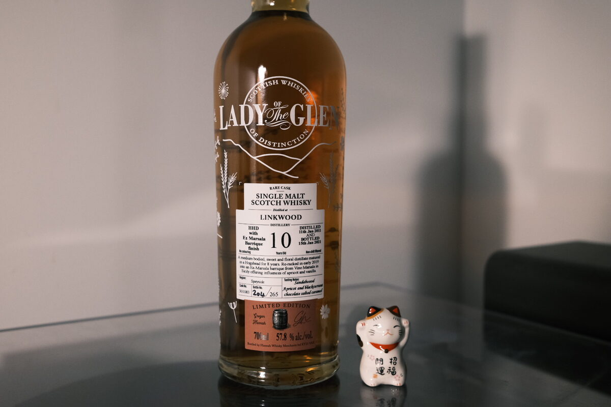

Linkwood 2011 Lady of the Glen 10 years 57.8% (Marsala finish)
Linkwood! How could I say no? Eight years in a hogshead followed by two in a Marsala barrique from Vino Marsala in Sicily. Blackcurrants are mentioned on the bottle, and I must agree…
Colour Amber.
Nose This one has depth. Berry coulis – perhaps even berry sorbet? Brightness, too. I’ve gone to the gelataria and gotten a scoop of lemon sorbet, strawberry sorbet, and perhaps a chocolate gelato. Esters. Balsamic vinegar. Tart apples and cherries. A bit of brown sugar. A slight cheesy, umami funk to it too. A little bit of minerality, saltiness. Finally, a waft of greenness – I’d like to say floral, given it’s a Linkwood.
Palate Juicy! Apple and blackcurrant juice. Tart and bright. Wine-driven sweetness. Pain aux raisins. The alcohol here is so well integrated. The malt is terrific too. It’s not hidden – I wouldn’t say it’s centre stage, but certainly integral. There’s a spot of lovely, rounding oak and tannins at the end. With water, citrus oils and a bit of eucalyptus.
Finish Gluhwein and tiramisu (who would have thought…?). Oak and oak spices. Cinnamon and vanilla. Jam on toast. Still have echoes of that juiciness: blackcurrants are back with a vengeance. Ribena! Perfumed and long, very winey. Warming and ever so lightly nutty: toasted hazelnuts.
Comments Terrific stuff. Juicy, bright, and wine-forward. The malt is not drowned and plays an important role. Alcohol is well integrated. Nothing bad to say. 89/100.

Posted by Dominic on 12 May 2021